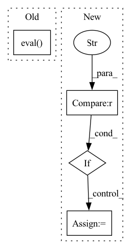

Pattern ID :4398
Before Change
def get_outputs(self, args, dataloader, model):
model.eval()
total_labels = torch.empty(0,dtype=torch.long).to(self.device)
total_preds = torch.empty(0,dtype=torch.long).to(self.device)
total_features = torch.empty((0,args.feat_dim)).to(self.device)
After Change
def get_outputs(self, args, mode = "eval", get_feats = False):
if mode == "eval" :
dataloader = self.eval_dataloader
elif mode == "test":
dataloader = self.test_dataloader
self.model.eval()
total_labels = torch.empty(0, dtype=torch.long).to(self.device)In pattern: SUPERPATTERN
Frequency: 3
Non-data size: 4
Instances Fragment ID: 16176420
Project Name: thuiar/textoir
Commit Name: 203370e17d2a3452b90670171b60c44cb1500bcd
Time: 2021-08-03
Author: zhang-hl20@mails.tsinghua.edu.cn
File Name: open_intent_discovery/methods/semi_supervised/MCL_BERT/manager.py
M Class Name: MCLManager
N Class Name: MCLManager
M Method Name: get_outputs(4)
N Method Name: get_outputs(4)
M Parent Class:
N Parent Class:
M File Name: open_intent_discovery/methods/semi_supervised/MCL_BERT/manager.py
N File Name: open_intent_discovery/methods/semi_supervised/MCL_BERT/manager.py
M Start Line: 20
M End Line: 40
N Start Line: 93
N End Line: 130
Before Change
tuple -- (position, energy, variance)
self.wf.eval()
num_threads = 1
hvd.broadcast_parameters(self.wf.state_dict(), root_rank=0)
torch.set_num_threads(num_threads)
After Change
// check if we have to compute and store the grads
grad_mode = torch.no_grad()
if self.wf.kinetic == "auto" :
grad_mode = torch.enable_grad()
// distribute the calculation
num_threads = 1 Fragment ID: 16176418
Project Name: nlesc-jcer/qmctorch
Commit Name: 9c3e63cd2b3fe345a850beb13cc978a28a4945b0
Time: 2020-07-16
Author: nicolas.gm.renaud@gmail.com
File Name: qmctorch/solver/solver_orbital_horovod.py
M Class Name: SolverOrbitalHorovod
N Class Name: SolverOrbitalHorovod
M Method Name: single_point(3)
N Method Name: single_point(3)
M Parent Class: SolverOrbital
N Parent Class: SolverOrbital
M File Name: qmctorch/solver/solver_orbital_horovod.py
N File Name: qmctorch/solver/solver_orbital_horovod.py
M Start Line: 223
M End Line: 279
N Start Line: 220
N End Line: 276
Before Change
def __init__(self, model: str, device: str):
config = BartConfig.from_pretrained("hyunwoongko/kobart")
self.model = BartForConditionalGeneration(config).half().eval() .to(
device)
self.model.model.load_state_dict(torch.load(
model,After Change
config = BartConfig.from_pretrained("hyunwoongko/kobart")
self.model = BartForConditionalGeneration(config).eval().to(device)
if "cuda" in device :
self.model = self.model.half()
self.model.model.load_state_dict(torch.load(
model, Fragment ID: 16176417
Project Name: kakaobrain/pororo
Commit Name: ff5722c23e38b6c29b43f20d72e182c5818bd213
Time: 2021-02-03
Author: root@brain-cluster-gpu4.dakao.io
File Name: pororo/models/bart/KoBART.py
M Class Name: KoBartModel
N Class Name: KoBartModel
M Method Name: __init__(3)
N Method Name: __init__(3)
M Parent Class: object
N Parent Class: object
M File Name: pororo/models/bart/KoBART.py
N File Name: pororo/models/bart/KoBART.py
M Start Line: 18
M End Line: 18
N Start Line: 18
N End Line: 23